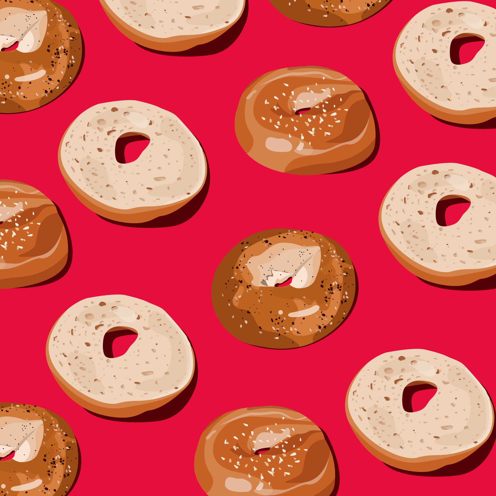
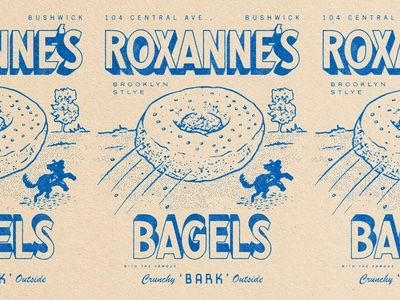

How to make bagels
New
I am going to illustrate the images, images currently included are inspiration and refrence.
We discussed evalutaions over zoom so did not get a link to evalutation


description
It’s immensely satisfying when you realize that a commonly bought item is easily prepared at home. Take bagels, for instance. This guide will explain how to make them, from mixing to forming, boiling to baking. The result is a traditionally chewy, crusty bagel that’s far fresher and tastier than those puffy dough rings from your average store. This recipe yields a dozen, and you’ll want to reserve an afternoon and the next morning to complete the process, making it an ideal weekend project. Just — please — don’t add raisins.
Bagels are likely one of those foods you’ve never thought to make at home. But not only are homemade bagels possible, they’re absolutely worth making. Homemade bagels are irresistibly chewy, boast a crisp golden-brown exterior, and taste fresher and more flavorful than anything you can buy. Plus, you can get endlessly creative with toppings and mix-ins.
Did I mention they’re one of the easiest from-scratch breads you can make? Bagels require just a handful of staple ingredients and no special equipment. Here, we’ll walk you through every step of the process, showing you how to make and shape bagels like a pro — and how to prep the dough in advance so you can bake off a fresh batch in the morning. Step aside, sourdough: It’s bagel’s time to shine.
ingredients
For the Dough
- 2¼ cups/530 milliliters lukewarm water (105 to 110 degrees)
- 2 tablespoons barley malt syrup, (available in health food stores and some well-stocked supermarkets; an equal volume of molasses is a passable substitute, but won’t impart the traditional malty flavor)
- 1 (¼-ounce) packet active dry yeast (about 2¼ teaspoons)
- 6½ cups/885 grams bread flour (or use 6 cups bread flour and ½ cup whole-wheat flour), plus more for kneading
- 2 tablespoons/17 grams Diamond Crystal kosher salt or 1 tablespoon/17 grams Morton kosher salt
- Neutral oil, for greasing the baking sheets
For Assembly
- 1 teaspoon baking soda
- ¼ cup/60 milliliters barley malt syrup, plus more as needed
- 2 ounces/30 grams each sesame seeds, poppy seeds, caraway seeds, dried minced garlic, dried minced onion and/or flaky salt (optional)
equipment
Scale (optional but recommended), a small bowl, a large mixing bowl, flexible spatula or wooden spoon, bench scraper, two large rimmed baking sheets, parchment paper, plastic wrap, a spider or slotted spoon, tea towel, a large Dutch oven, several separate large plates (if topping bagels), wire rack and a serrated knife.
Instructions
- Pour ½ cup/120 milliliters lukewarm water into a small bowl. Whisk in 2 tablespoons barley malt syrup and the packet of yeast until both dissolve. Let sit until the mixture foams, about 5 minutes.
- In a large bowl, combine bread flour and salt (and whole-wheat flour, if using), and make a well in the center. Pour in yeast mixture and the remaining 1¾ cups/420 milliliters lukewarm water, and mix, using the flexible spatula or wooden spoon, until the dough is shaggy.
- Knead the mixture in the bowl several times, continuously folding it over and onto itself and pressing down firmly to bring it together in a solid mass, then turn it out onto a clean work surface. Continue kneading until there are no dry spots, then, adding more flour only if needed to prevent stubborn sticking, until you have a stiff but very smooth dough that is still slightly tacky, 15 to 20 minutes
- Gather the dough into a ball, dust it lightly with flour, and place it in a large, clean bowl, seam-side down. Cover with a damp towel and let the dough rise at room temperature until it has doubled in size, 1½ to 2 hours.
- Using your fist, lightly punch down the dough to knock out some of the air, and turn it out onto a clean work surface. Using a bench scraper, cut the dough into 12 equal pieces, either eyeballing it or using a scale to weigh out 4⅓-ounce/125-gram pieces. If you prefer a slightly smaller bagel, which is more traditional, you could make a baker’s dozen (13) and weigh out 4-ounce portions.
- Before you form the bagels, preshape the pieces into tight balls. Working one ball at a time, gather all the irregular edges and pinch them together firmly to make a teardrop shape (above). Place the dough seam-side down on the surface and cup your hand down and over top of the dough in a loose grip (like a claw, or like you’re playing the piano).
- Line two large rimmed baking sheets with parchment paper, brush lightly with oil, and set aside. Working one piece at a time, roll out a ball on the surface beneath your palms into a 9-inch-long rope. Apply extra pressure at the ends of the rope to thin them slightly, then wrap the rope around one hand where your palm and fingers meet, overlapping the ends by an inch or two along the inside of your hand (above).
- Roll the dough under your hand back and forth several times to seal together the ends, then slip the ring of dough off your hand and stretch it to even out the thickness all the way around until you have a ring that measures about 4 inches across (above). As you form each ring, place it on a parchment-lined sheet, arranging six to a sheet and spacing evenly.
- When you’ve formed all the bagels, cover each baking sheet with a piece of plastic, followed by a damp towel to create a sealed, moist environment for the bagels to proof slowly. Transfer the baking sheets to the refrigerator and chill at least 4 hours and up to 24.
- About 2 hours before you’d like to serve the bagels, arrange an oven rack in the center position and heat the oven to 450 degrees. Fill a large, wide Dutch oven halfway with water and place it on the stove. (Heat should be off at this point.) Set a wire rack next to the Dutch oven. If topping the bagels, spread several tablespoons each of sesame seeds, poppy seeds, caraway seeds, dried minced garlic, dried minced onion and flaky salt on separate large plates in generous, even layers. Set the plates of toppings next to the wire rack.
- Remove one baking sheet from the refrigerator. Fill a small bowl with room temperature water, then carefully peel one ring of dough off the parchment paper and transfer it to the bowl. It should float, indicating that the bagels are ready to boil and bake. Remove the ring from the water, pat it dry on a towel and place back on the baking sheet. Remove the other baking sheet from the refrigerator.
- Set the Dutch oven over high heat and bring to a boil. Whisk in the baking soda and ¼ cup barley malt syrup. You want the water to look like strong black tea, so add more barley malt syrup by the tablespoon until it does. Bring everything back to a boil, reduce the heat if necessary to maintain a gentle boil, and skim any foam from the surface. Uncover one baking sheet and carefully transfer as many bagels as will comfortably fit in one layer to the Dutch oven, leaving some room for them to bob around. Boil for 1 minute, turning halfway through.
- Use a spider or slotted spoon to transfer the bagels to the wire rack and repeat with the remaining bagels on the first sheet. The bagels will swell in the water, then deflate when removed, but they will puff up again in the oven. Discard the piece of parchment that was underneath the bagels but reserve the baking sheet.
- Add the optional topping: Working with one at a time, place a boiled bagel on one of the plates with the toppings and turn to coat so the topping adheres to the wet surface of the dough on both sides. Place the coated bagels on the empty baking sheet, flat-side down, and repeat with the remaining boiled bagels, spacing evenly.
- Transfer the baking sheet to the oven and bake until the bagels are deeply brown, 20 to 25 minutes, rotating the baking sheet 180 degrees after 12 minutes.
- While the first sheet of bagels is in the oven, repeat the boiling and coating process with the second sheet, adding more toppings to the plates as needed. Transfer the second sheet to the oven when the first is finished. Let the bagels cool completely on a wire rack before slicing with a serrated knife.
Recipe sites
I liked the NYT Bagel page because of the heading where you can select which step of the recipie you are on. I also like the organization of the steps as you scroll.
I like the Bon Appetit pages because of its simplicty and multi column utlization. There landing page of the recipe is eye catching and clear.
I like the Tasty Videos As they make the cooking process clear and easy to understand. The video content helps draw the viewer in
Website inspo
I love this portfolio by Philippe Neveu as it is interactive, creative and a fun experience to explore through
I love this website for a design comapny called Sennep They utilize 3D aspects in their website creation to make scrolling feel dynamic
I love the typography in this portfolio by Garcia Salmeron . I love how the typography changes when it interacts with the text.


Source
NYT Bagel